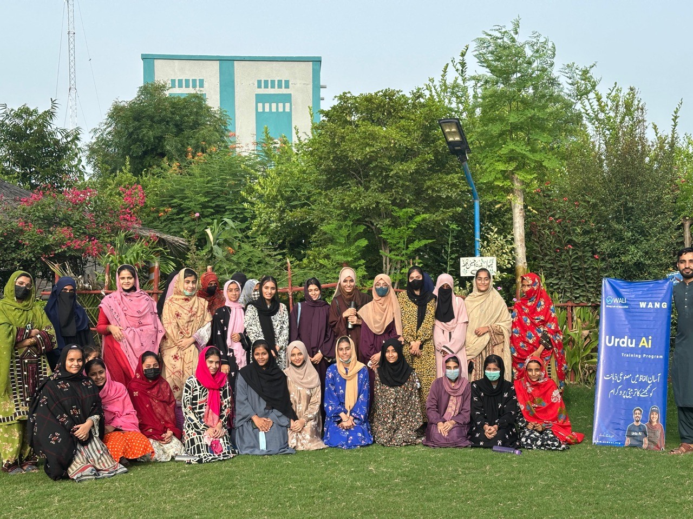
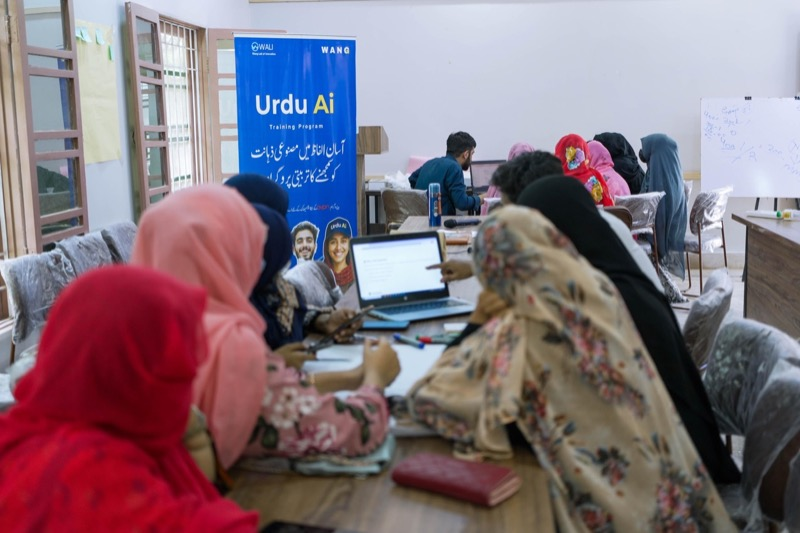

Technology, enterprise, and leadership — built with mothers and daughters in Lasbela.
National platforms often overlook rural women and girls. WANG works from
Ahmed Abad Wang, District Lasbela, Balochistan, where unreliable connectivity,
distance from urban centres, and language barriers amplify the gender digital divide. This page
explains how WANG’s field model combines WIRE (women’s rural enterprise),
WALI lab training, scholarships, solar-powered learning, and climate-resilient
housing — and why international partners recognize that work.

Context
Why rural women and girls in Balochistan need a dedicated local organization.
Connectivity and inclusion
Many Pakistani women still face barriers to regular, meaningful internet use — especially in
provinces where infrastructure and safe public access lag cities. In Balochistan’s rural
districts, girls’ education and women’s digital inclusion are tightly linked to household
economics, security, and mobility.
English-first programs miss most families
Large-scale digital-skilling platforms often default to English and assumed home
connectivity. WANG’s answer is different: Urdu-first explanation, in-person
cohorts at WALI, and mentors who live in the same
communities as learners.
Girls’ leadership is a program outcome
WANG treats girls’ education and women’s livelihoods as one system — scholarships,
re-enrolment support, safe learning spaces, and later pathways into Urdu AI and enterprise
skills so families see a continuum, not a one-off workshop.

Programs
What WANG runs on the ground.
WIRE — Women in Rural Enterprise
WIRE pairs women’s traditional economic roles with digital tools: mobile literacy, online
visibility for small producers, safer communication practices, and structured mentorship.
Read the public landing:
WIRE overview and explore the full story on walipak.com.
WALI lab cohorts for women and girls
The WALI innovation lab hosts batches where first-time
learners — many of them young women — can practice computing without relying on home
broadband. Solar backup and community scheduling reduce dropout when the grid fails.
Scholarships and re-enrolment
Keeping girls in school is a precondition for later tech fluency. WANG’s Lasbela scholarship
and re-enrolment work (documented across
impact metrics and journal posts) sits upstream of every advanced
skills program.
WANG’s integrated work on climate resilience, community leadership, and gender inclusion earned
Organization category recognition at the CAREC Gender Climate Awards 2024. That
validation sits alongside partner recognition from Google.org / AVPN on AI literacy and coverage of rural
innovation. See
Awards & recognition and the
CAREC journal article.
Urdu AI
Free AI literacy — also for women joining the digital economy late.
As women-led enterprises adopt messaging, short video, and lightweight automation, AI literacy in
plain Urdu becomes practical, not abstract.
Urdu AI is the national public
platform; WANG builds the community trust that helps skeptical households take the first
step.
Free AI literacy in Urdu
Start with Urdu AI — then bring questions back to WALI.
The fastest public on-ramp is urduai.org. If you represent a women’s network, school, or CSR
program, pair the platform with an in-person session in Lasbela or your district.
Fund women’s batches, scholarships, or WIRE scale-up.
Donors and corporate partners can underwrite discrete outcomes: a WIRE training round, a girls’
scholarship tranche, or solar maintenance for the lab. WANG publishes aggregate impact on
Impact and detailed initiative context on
Initiatives.